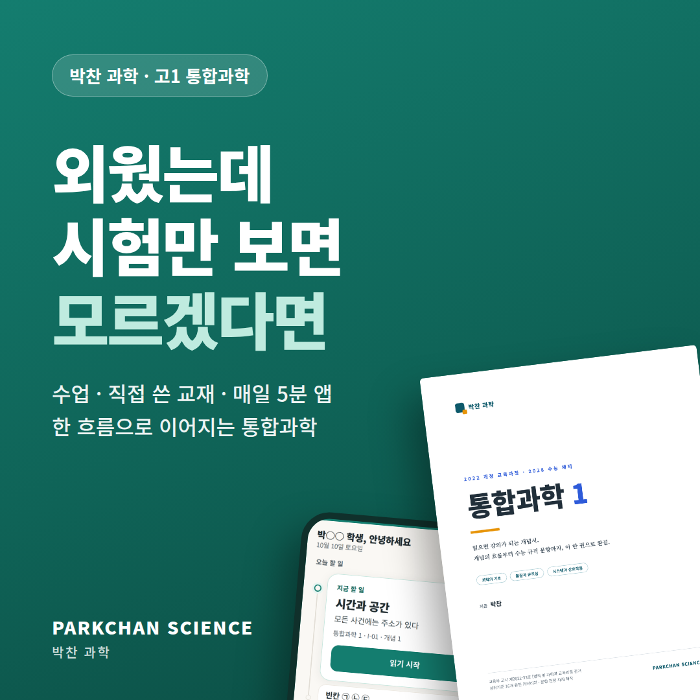
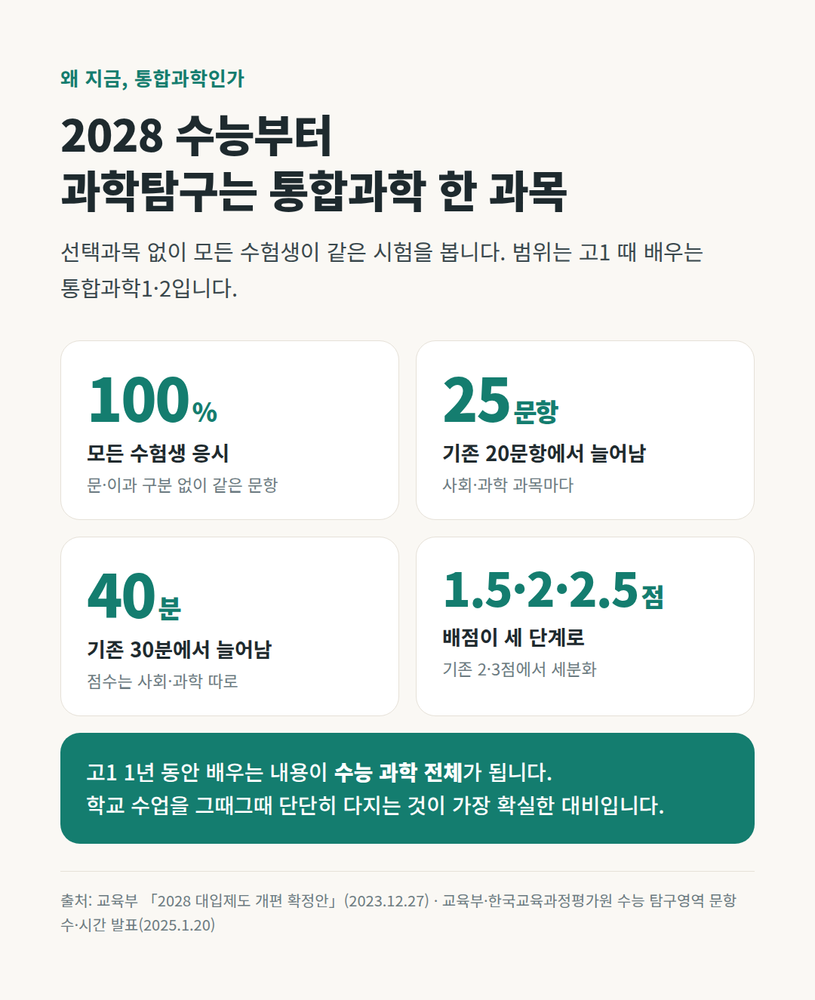
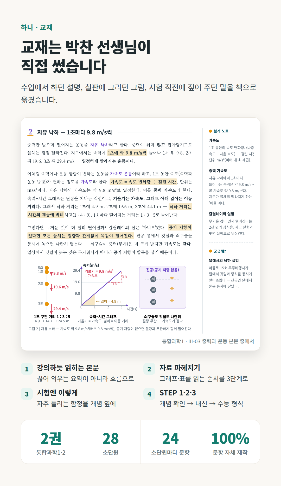
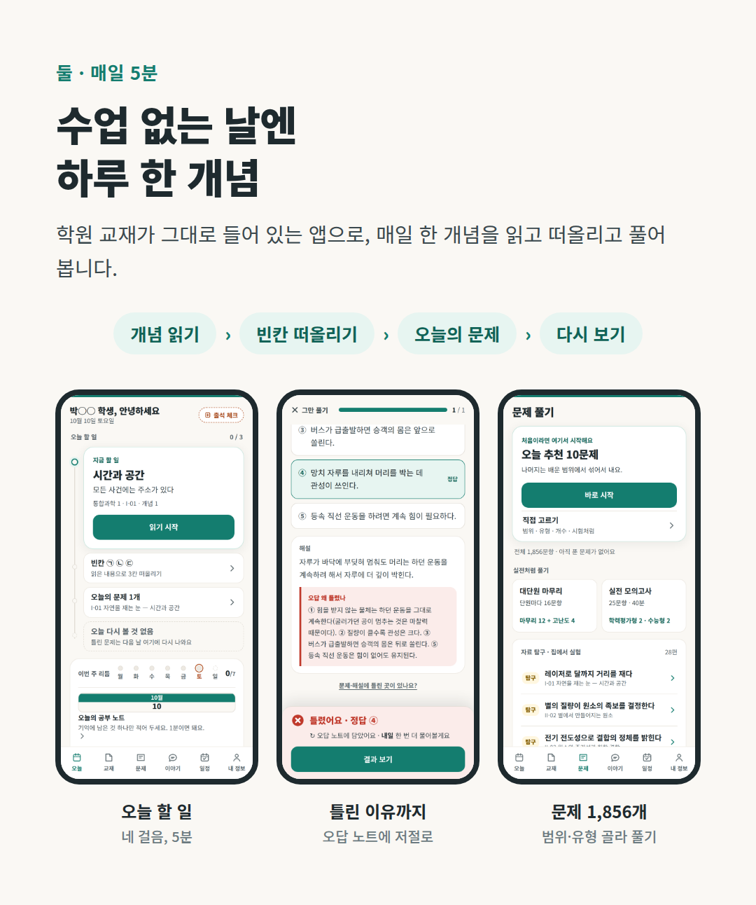
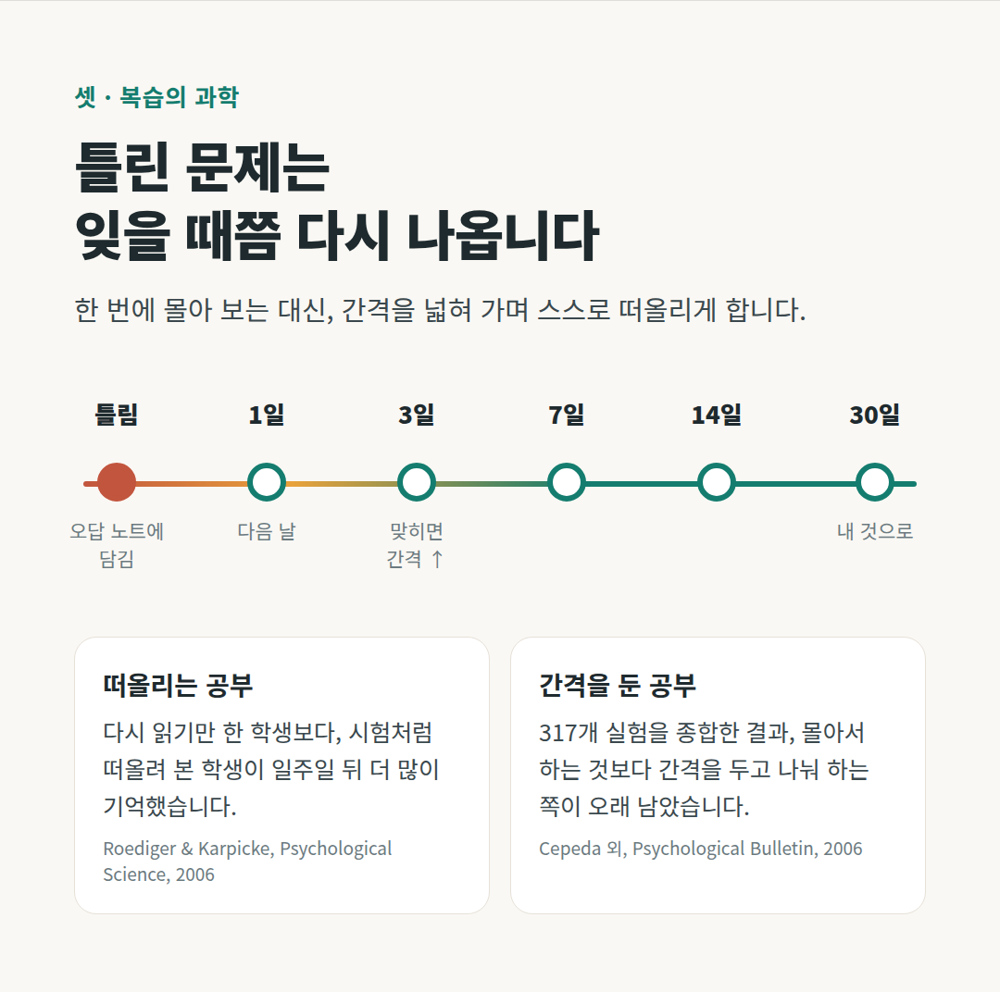
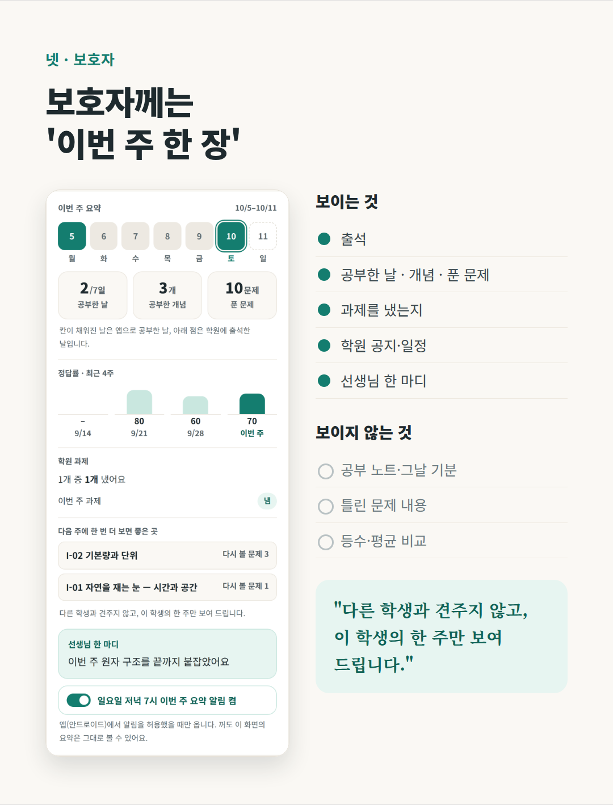
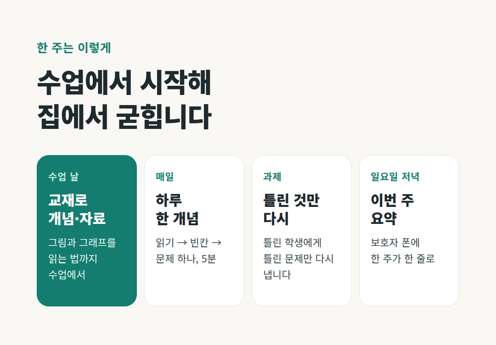

고1 통합과학, 외웠는데 시험만 보면 모르겠다면 | 【지역】 박찬 과학

안녕하세요, 박찬 과학 박찬입니다.
"선생님, 외웠는데 시험만 보면 모르겠어요."
강의실에서 가장 많이 듣는 말입니다. 오랫동안 학생들을 만나며 확인한 것이 하나 있습니다. 학생들이 막히는 건 개념이 어려워서가 아니라, 개념이 이야기로 이어지지 않아서라는 것입니다.
빅뱅과 스펙트럼과 주기율표를 따로따로 외운 학생은 처음 보는 문제 앞에서 무너집니다. "우주가 식으면서 원소가 생겼고, 그 원소의 규칙이 주기율표"라는 흐름을 가진 학생은 길을 찾습니다. 박찬 과학의 수업·교재·앱은 모두 이 흐름을 만들기 위해 있습니다.
2028 수능부터, 과학탐구는 통합과학 한 과목

2025년 고1부터 적용되는 2028학년도 수능에서는 과학탐구 선택과목이 없어지고, 모든 수험생이 통합과학을 봅니다. 문항은 25개, 시간은 40분으로 늘었고 배점도 1.5·2·2.5점 세 단계로 나뉩니다.
통합과학은 고1 때 학교에서 배우는 공통과목입니다. 학교 내신 범위가 곧 수능 과학 범위라는 뜻입니다. 그래서 가장 확실한 대비는 특별한 비법이 아니라, 고1 수업을 그때그때 단단히 다지는 것입니다.
하나. 교재는 직접 씁니다

박찬 과학의 교재 『통합과학 1·2』는 제가 직접 썼습니다. 수업에서 하던 설명, 칠판에 그리던 그림, 시험 직전에 짚어 주던 말을 그대로 옮겼습니다.
- 강의하듯 읽히는 본문 — 끊어 외우는 요약이 아니라, 읽으면 강의가 되는 문장
- 자료 파헤치기 — 그래프와 표를 읽는 순서를 3단계로
- 시험엔 이렇게 — 자주 틀리는 함정을 개념 바로 옆에
- STEP 1·2·3 — 개념 확인 → 내신 → 수능 형식(ㄱ·ㄴ·ㄷ 합답형·자료 해석)
두 권, 28개 소단원, 소단원마다 24문항입니다. 문항은 모두 직접 만들었고, 모든 문항의 정답 근거는 반드시 본문 안에 있습니다. 시험에 나오는데 본문에 없는 내용은 '결함'으로 보고 고쳐 왔습니다.
둘. 수업 없는 날엔 '하루 한 개념' 5분

수업이 일주일에 두 번이어도, 공부는 매일 이어져야 합니다. 그래서 학원 교재를 그대로 담은 앱 「박찬 과학 · 하루 한 개념」을 만들었습니다.
- 개념 읽기 — 그날의 개념 하나(그림 읽는 법·용어 뜻 포함)
- 빈칸 떠올리기 — 읽은 내용에서 ㉠㉡㉢ 세 칸을 먼저 떠올리고 답 확인
- 오늘의 문제 — 고르면 바로 채점하고, 왜 틀렸는지까지
- 다시 보기 — 전에 틀린 문제가 정해진 날에 다시 나옵니다
개념 140개, 문제 1,856개, 자료 탐구 28편이 들어 있습니다. 수강생은 학원 코드를 넣으면 전 범위가 열립니다.
셋. 복습은 과학으로

틀린 문제는 다음 날, 그다음엔 3일·7일·14일·30일 뒤처럼 간격을 넓혀 다시 나옵니다. 맞히면 간격이 넓어지고, 또 틀리면 다시 가까워집니다.
이 방식에는 근거가 있습니다.
- 다시 읽기만 한 학생보다 시험처럼 떠올려 본 학생이 일주일 뒤 더 많이 기억했다는 연구(Roediger & Karpicke, 2006)
- 317개 실험을 종합해 몰아서 하는 것보다 간격을 두고 나눠 하는 쪽이 오래 남는다는 연구(Cepeda 외, 2006)
보호자께는 '이번 주 한 장'

보호자 화면에서는 아이의 한 주를 한 장으로 봅니다. 출석, 공부한 날·개념·푼 문제, 과제를 냈는지, 학원 공지·일정, 그리고 선생님 한 마디.
대신 아이의 공부 노트와 그날 기분, 틀린 문제 내용은 보이지 않습니다. 등수나 평균 비교도 어디에도 없습니다. 다른 학생과 견주지 않고, 이 학생의 한 주만 보여 드립니다.
한 주는 이렇게 흘러갑니다

수업 날에는 교재로 개념과 자료 해석을 다지고, 수업 없는 날에는 앱으로 5분. 과제는 틀린 학생에게 틀린 문제만 다시 냅니다. 주말에는 보호자 화면에 그 주가 한 장으로 정리됩니다.
이런 학생에게 맞습니다
- 개념은 아는 것 같은데 그래프·자료 문제에서 자꾸 틀리는 학생
- 시험 전에 몰아서 외우고, 시험 끝나면 다 잊는 학생
- 혼자서는 복습 계획이 잘 안 서는 학생
- 과학이 어느 순간부터 재미없어진 학생
수업 안내
- 대상: 고1 통합과학 【확인 필요 — 고2 포함 여부】
- 반·시간: 【확인 필요 — 예: 월·목 18:00】
- 교습비: 【확인 필요 — 교육청에 등록한 금액 그대로】
- 위치: 【확인 필요】
- 상담: 【전화 번호】 · 【카카오톡 채널】
- 학원 등록번호: 【확인 필요】
앱은 가입 없이 최근 7일치를 무료로 둘러볼 수 있습니다. 사진 속 QR을 휴대폰 카메라로 비추거나 아래 주소를 눌러 보세요.
https://usualhealth383-cloud.github.io/autoblog/parkchan/
과학은 세상을 읽는 가장 정직한 언어입니다. 박찬 과학이 그 첫 문장이 되겠습니다.